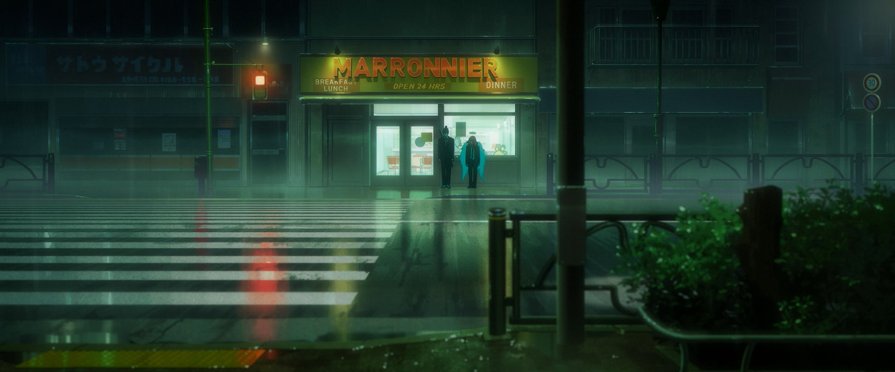

404 Not Found
田 舎 の ネ ズ ミ は 安 全 に 暮 ら せ る け ど 、 都 会 の よ
う に 美 味 し い 食 事 は で き な い 。 都 会 の ネ ズ ミ は
美 味 し い 食 事 に あ り つ け る け ど 、 人 や 猫 に 殺 さ
れ る 危 険 性 が 高 い 。 僕 は 田 舎 の ネ ズ ミ が 良 か っ
た 。 け ど 、 マ キ マ に 捕 ま っ て 、 都 会 に 連 れ て 来
ら れ た ん だ 。 僕 の 心 は 田 舎 に あ る の さ 都 会 の 君
に 付 き 合 っ て 危 険 な 目 に 会 う の は ご め ん だ ね。

Aesop’s FableThe country mouse can live in safety, but it can’t have meals as delicious as in the city. The city mouse can get delicious meals, but there’s a high risk of being killed by humans or cats. I would have preferred to be the country mouse. But I was caught by Makima and brought to the city. My heart is in the countryside. I’ll pass on keeping you company, a city mouse like you, and running into danger.